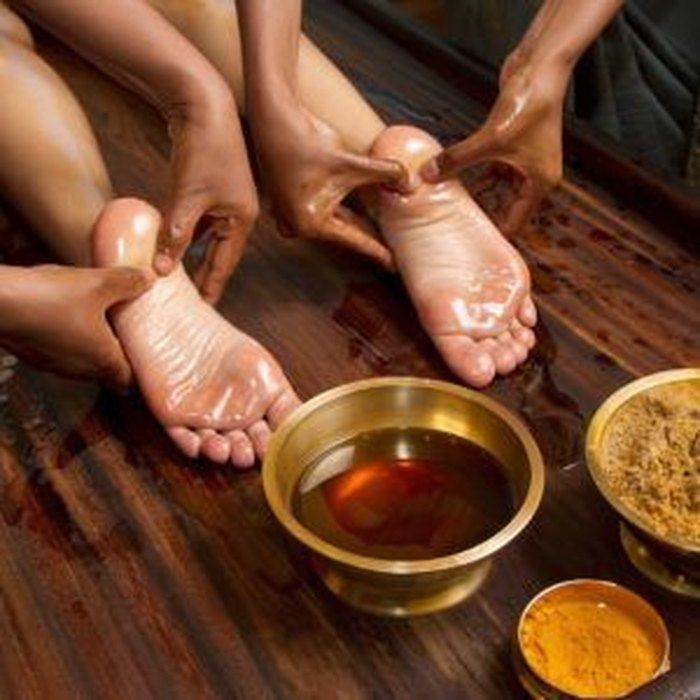
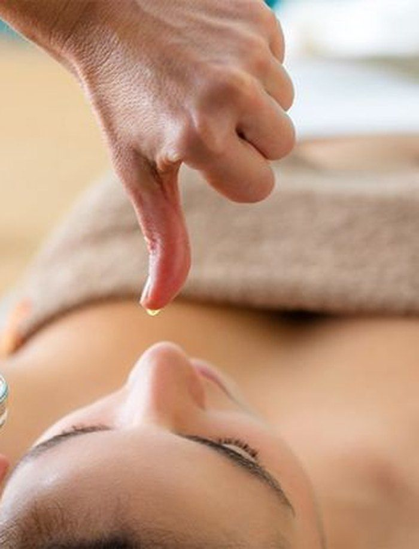
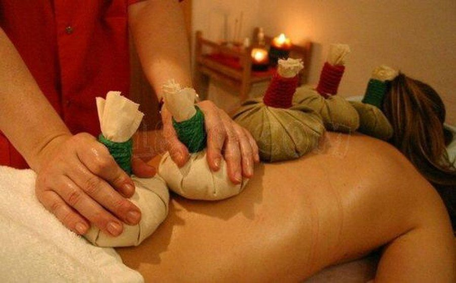
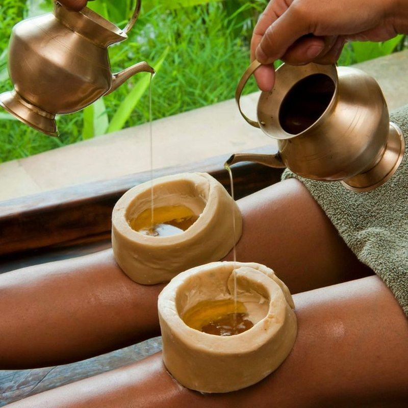
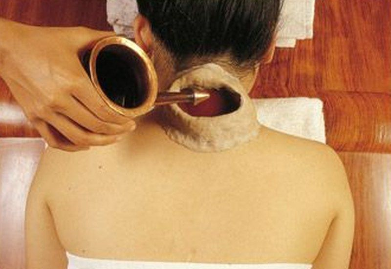
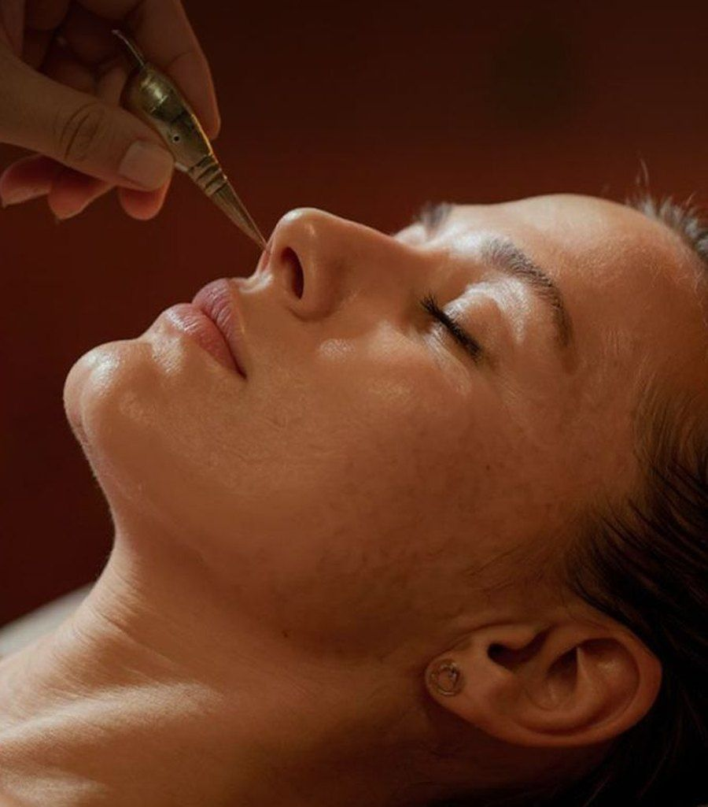
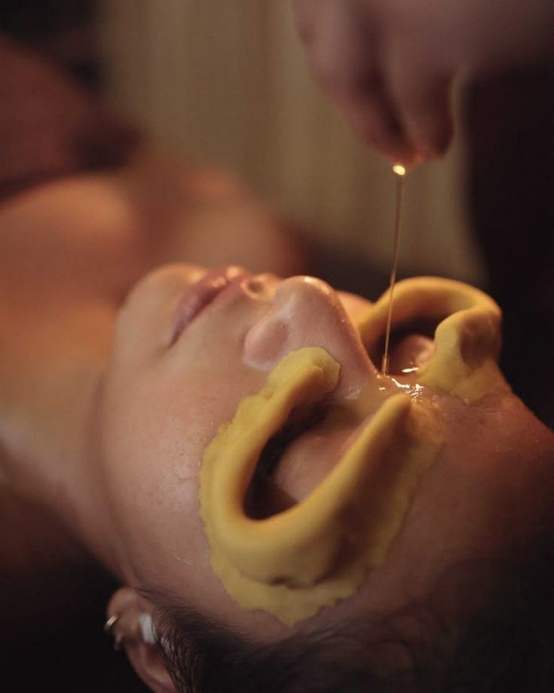

Panchakarma and Ayurvedic therapies in Karnal
Classical Ayurvedic treatments delivered in our Sector 6 clinic, planned after a doctor's assessment and tailored to your body type and season.
Panchakarma treatment in Karnal
Panchakarma means five actions. It is Ayurveda's deep cleansing programme, designed to remove built-up toxins and reset digestion and metabolism. It is planned individually and never started without a consultation.

Vamana
Therapeutic emesis, mainly for Kapha-type conditions.
Virechana
Therapeutic purgation, mainly for Pitta-type conditions.
Basti
Medicated enema, central for Vata-type conditions and joint care.
Nasya
Nasal administration for the head and neck region.
Raktamokshana
Blood purification, used selectively and only when suited.
Every programme starts with Purvakarma (oil massage and herbal steam) and ends with Paschat karma (a gentle diet and routine to hold the benefits). Programmes typically run for several days to a few weeks, depending on your needs.
Plan my PanchakarmaTreatment packages
Our treatment package includes Janu Vasti, Greeva Vasti, Shirodhara, Abhyangam, Swedanam, Akshi Tarpanam, Nasya, Pinda Swedanam, Pizhichil, Nadi Swedanam and many more Ayurvedic treatments. They are used for knee, joint and back pain, arthritis and osteoarthritis, eye problems, paralysis, cervical pain, sciatica, long-standing nasal problems, migraine, insomnia, nerve blockage, and spinal and other injuries. Each therapy is selected for you by the doctor, and prices are quoted after your consultation, since the number of sessions varies from person to person.

Abhyangam
Warm medicated oil massage that eases stiffness, supports sleep and prepares the body for deeper therapy.
Shirodhara
A slow, steady stream of warm oil over the forehead. Often chosen for stress, poor sleep and mental fatigue.

Pizhichil
Warm oil is poured over the body with rhythmic massage. Used for joint stiffness and muscle weakness.

Pinda Swedanam
Warm herbal poultices applied to the body to relieve pain and stiffness.

Janu Vasti
Warm oil is held over the knee within a dough ring. Commonly planned for knee pain and stiffness.

Greeva Vasti
Warm oil held over the neck and upper spine. Planned for cervical and neck discomfort.

Nasya
Medicated oil or powder through the nose. Used for sinus issues, headaches and head-and-neck care.

Akshi Tarpanam
Medicated ghee held around the eyes. Planned for tired, strained eyes.
Swedanam and Nadi Swedanam
Medicated steam to open channels, ease stiffness and prepare the body for cleansing.
Spa packages
Spa treatments such as hydrotherapy, massage and heat therapy can improve blood circulation and help regulate blood pressure. Choose from every kind of body spa for rejuvenation. Spa package fees are shared on enquiry.
Hot stone massage
Warm, smooth stones placed on and moved over the body to loosen tight muscles and calm the mind.
Special essential oil massage
A relaxing massage with selected essential oils, planned around your skin and comfort.
Spa bath
A soothing hydrotherapy bath to ease tired muscles and support circulation.
Butter massage
A gentle, nourishing massage that leaves skin soft and the body relaxed.
Face, hair, foot, head and body spa
Targeted care for the face, hair, feet, head or the whole body, chosen to suit what you need.
Mental benefits
A spa visit relaxes the body and the mind. Therapeutic massage and foot care can lift your mood and confidence.
Detoxification
Spa therapies support the body in letting go of excess fluid and bloating, so you feel lighter.
Feel and look young
Looking after body and mind helps keep stress low. Facials and body treatments help skin look fresh.
Circulation and blood pressure
Hydrotherapy, massage and heat therapy support blood circulation and healthy blood pressure.
How a therapy plan begins
- Book a consultation first (in clinic is best for therapy planning)
- The doctor selects therapies and the number of sessions
- You receive a schedule and clear pre- and post-therapy instructions
- Progress is reviewed as you go
Start with a consultation
Therapies work best when they are chosen for you. Begin with a conversation with Dr. Arora.